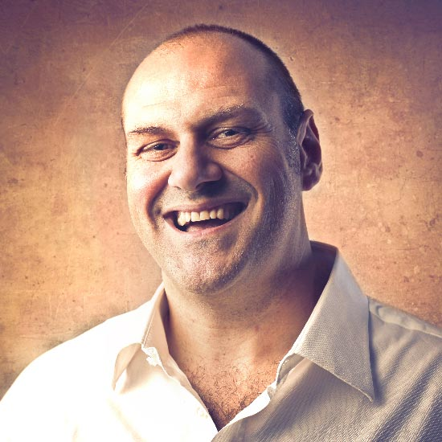

Your entire dev process,
running on your own servers.
DevTeam Hub brings ticket management, sprint ceremonies, BDD testing with Cucumber, CI pipelines, and a local AI engine into one self-hosted platform — no data ever leaves your network.

The full agile lifecycle, out of the box
From sprint planning to retrospectives, DevTeam Hub runs every ceremony automatically — scheduled, recorded, and linked to your tickets and velocity data.
Daily Stand-up
Structured daily meeting with yesterday / today / blockers — linked to active tickets and sprint progress. Jitsi video integrated.
DailySprint Planning
Pull tickets from the backlog into a time-boxed sprint. AI estimation calibration surfaces under/over-estimate patterns before you commit.
Per SprintSprint Review
Review completed tickets against sprint goals. CI pass rates, deployment status, and velocity charts are right there on the sprint page.
End of SprintRetrospective
Structured retro with went-well / improve / actions. AI retro assistant clusters team comments into themes and proposes action items.
End of Sprint

Every unit of work, fully tracked
Tickets move through a clear lifecycle — from draft through approval, estimation, development, and testing — all the way to done. Nothing falls through the cracks.
- Full lifecycle: draft → approved → estimated → in progress → done
- Priority, kind, complexity, assignee, and owner on every ticket
- Git branch auto-created from the ticket title
- Linked CI runs, PRs, deployments, and tasks
- AI readiness check — pushes vague tickets back to the owner
- Task breakdown with calibrated time estimates


Predictable iterations, visible progress
One active sprint at a time. Burn-down charts, velocity tracking, and an AI health score tell you whether the sprint is on track — before it's too late to act.
- Single current sprint with clear goals and burn-down
- Velocity reports across sprints — spot trends early
- AI sprint analysis loads live on the sprint page
- Estimation accuracy scoring per developer and per complexity level
- Sprint calendar with automatic ceremony scheduling


BDD with Cucumber — baked in, not bolted on
Cucumber feature files live alongside your code. CI parses results directly into DevTeam Hub. The AI reviews your Gherkin and suggests missing scenarios before you push.
Your .feature files drive the board
Multi-framework, multi-language support
Ruby / Rails
cucumber-rails with full Capybara browser testing and RSpec integration.
Go (godog)
godog v0.14 runs Gherkin scenarios against the Go CLI — httptest mocks included.
.NET / C#
SpecFlow feature files for C# services with xUnit step definitions.
Playwright / UI
End-to-end browser tests for web portals — recorded in CI and linked to tickets.
CI test results parsed into the platform
Every CI run posts results back to DevTeam Hub. Test coverage trends, failure rates, and flaky test detection are visible on the CI dashboard — linked to the ticket that broke them.


11 AI services — all running locally on your Mac mini
Powered by Ollama and a locally-running LLM (llama3.1, qwen2.5-coder, or any open model). No API keys. No SaaS. No data leaving your network. Ever.
POST /api/chat { model, messages }
Ai::OllamaClient ◀────────────────────── llama3.1 / qwen2.5-coder
{ message: { content } }
✅ Source code, diffs, ticket text — none of it reaches the internet.
Ticket Readiness Check
Judges the ticket against a Definition of Ready — clear story, testable criteria, bug reproduction steps. Auto-pushes vague tickets back to the owner.
POST /tools/ai/ticket_quality
Code Review (Go / Ruby / C# / Node)
Reviews a git diff for correctness bugs, security, performance, and language idioms. Groups findings into Blocking, Suggestions, and Lint.
POST /tools/ai/code_review
Cucumber Test Review
Reviews Gherkin for clarity, determinism, and structure. Suggests missing edge-case scenarios — written as ready-to-paste Gherkin.
POST /tools/ai/test_review
Solution Suggestion
Reads a ticket and proposes an implementation approach — steps, likely files, edge cases, risks, and which tests to add.
POST /tools/ai/solution_suggestion
Fix That Bug
Reads a bug ticket, reasons about the likely root cause, and proposes a minimal concrete fix with tests. Confidence score 0–100.
POST /tools/ai/fix_bug
Generate Tasks & Estimates
Breaks a story into independently estimable Task records. Calibrates estimates against the team's historical accuracy data.
POST /tools/ai/generate_tasks
Estimation Analysis
Compares dev_estimate vs actual hours per ticket. Surfaces systematic bias, per-developer patterns, and gives concrete coaching.
POST /tools/ai/estimation_analysis
Sprint Health Analysis
Live sprint assessment — on-track vs at-risk, WIP levels, workload balance, and the single most important next step. Score 0–100.
GET /tools/ai/sprint_analysis
Generate Specification
Derives a structured spec document from the project's user stories — goals, functional requirements, AC, non-functional, open questions.
POST /projects/:id/documents/generate
Status Presentation
Generates a slide-style Markdown status report from live metrics — tickets, tasks, CI pass rate, deployments, and milestones.
POST /projects/:id/documents/generate
Project-Scoped Chat
OpenAI-style chat with context from tickets, sprints, PRs, team performance metrics, and repository code. Ask anything about your project.
/projects/:id/ai_chats


🔌 Full REST API
Every feature is reachable from CI, scripts, the CLI, or your own integrations. Bearer token auth — one endpoint for everything.
List tickets. Filter by assignee, status, project, sprint.
Create a ticket with full metadata — project, priority, kind, assignee.
Update status, assignee, branch name, or any ticket field.
List projects with repo URL, default branch, and sprint info.
Sprint data — tickets, points, burn-down, velocity, CI pass rate.
Submit a diff for AI code review. Returns verdict, score, Markdown findings.
Submit a .feature file for AI Cucumber review and missing-scenario suggestions.
Get or regenerate the current user's API token.
devteam — the whole platform from your terminal
A single Go binary. No runtime, no Node, no Python. Works on Mac, Linux, and Windows.
Now with Cucumber tests via godog.
ticket
Open, start, stop, commit, push, done — full ticket lifecycle from the shell.
test
Run tests for a file or folder. Configured per repo via .devteam.yml.
commit / push
Stage, commit with a ticket-prefixed message, and push — in three short commands.
See everything the platform includes
Every view — ticket boards, CI dashboards, reports, admin, and more.


One platform, every role
"The AI readiness check alone saves us an entire planning meeting. Vague stories never reach the board anymore."
"I open the branch, commit, and push the PR without leaving the terminal. The CLI pays for itself every day."
"The Cucumber test review catches missing edge cases I always forgot. It's like a QA engineer in the CI pipeline."

"Velocity reports finally let me show stakeholders why we're slowing down — with data, not gut feeling."
Ready to run DevTeam Hub on your servers?
One Docker command. No cloud accounts. No data leaving your network. Contact us for a demo, a trial license, or on-site installation support.